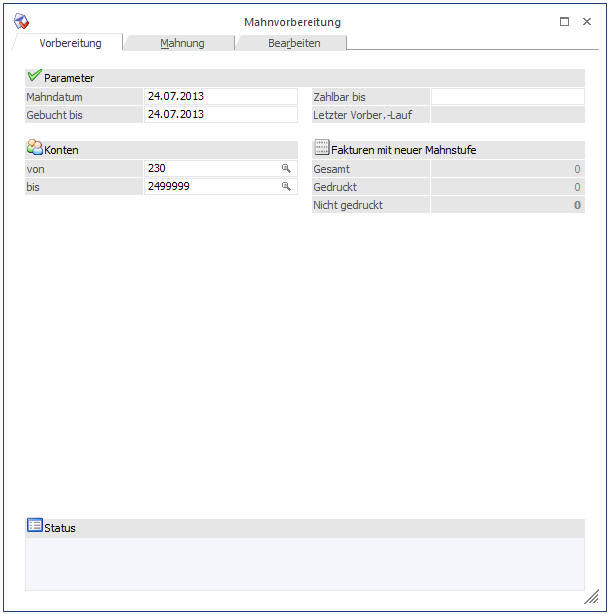
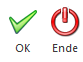
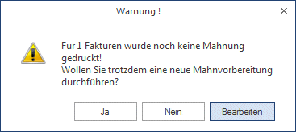
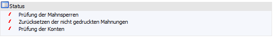

Im Fenster Mahnung stehen drei Register zur Verfügung. Zwischen den einzelnen Registern kann auch mit den Tastenkombinationen ALT+O (Vorbereitung), ALT+M (Mahnung) und ALT+R (Bearbeiten) gewechselt werden.
Die Mahnvorbereitung findet im Menüpunkt…
1 WinLine FIBU
1 Auswertungen
1 Offene Posten
1 Mahnung
1 Register "Vorbereitung"
… statt.
Es werden alle bestehenden Fakturen auf Ihre Fälligkeit geprüft und entsprechend den Vorgaben der Mahnparameter in den Mahnlauf einbezogen. Sie erhalten einen temporären Mahnvorschlag und es ist noch möglich, die Mahnungen zu überarbeiten. Erst beim Originaldruck der Mahnungen (im Register Mahnung) wird die Mahnstufe endgültig in die Spalte Mahnstufe der Offenen Posten zurückgeschrieben.

Parameter
Ø Mahndatum
Als Mahndatum wird das Tagesdatum vorgeschlagen. Dieses ist noch editierbar. Mit Doppelklick in den Feldern steht ihnen auch eine Kalenderfunktion zur Verfügung.
Ø Gebucht bis
Die Eingabe "Gebucht bis" dient als Informationsfeld für den Mahnungsempfänger. Als Vorschlag erhalten Sie das Tagesdatum, das noch editierbar ist.
Ø Zahlbar bis
Hier kann das Datum eingegeben werden, bis zu welchem die noch offenen Rechnungen spätestens beglichen werden sollen. Dieses Datum kann bei den Mahnungen auch angedruckt werden.
Ø Letzter Vorbereitungslauf
Informationsfeld (Datum erscheint), wann der letzte Mahnvorbereitungslauf durchgeführt wurde.
Konten
Ø von / bis
Alle Kunden, die fällige Offene Posten aufweisen, werden verarbeitet. Als Vorschlag im Kontenbereich werden die in den FIBU-Parametern eingetragenen Kundenkonten vorgeschlagen. Diese können noch editiert werden.
Fakturen mit neuer Mahnstufe
ü Gesamt:
Anzeige aller Fakturen
mit neuer Mahnstufe, die durch den Mahnlauf vorerst temporär erzeugt wurden.
ü Gedruckt:
Anzeige der Fakturen
für die bereits eine Originalmahnung ausgegeben wurde.
ü Nicht gedruckt:
Anzahl der
Fakturen, für die noch keine Originalmahnung gedruckt wurde.
Buttons

Ø Ende
Durch Drücken der ESC-Taste wird das Fenster geschlossen.
Ø OK
Mit Bestätigen der OK-Drucktaste wird der Mahnvorbereitungslauf gestartet. Während dieses Vorbereitungslaufes wird ein Mandantenlock gesetzt. Das bedeutet, dass andere Benutzer, die sich im System befinden z.B. keine Buchungen absetzen o.ä. können.
Wird ein temporärer Mahnlauf nochmals durchgeführt, erhalten Sie eine Warnmeldung, ob Sie das wirklich möchten. Gegebenenfalls können Sie nochmals in das Register Bearbeiten wechseln.

Status
Nach Bestätigen des OK-Buttons wird im Informationsfeld "Status" der Fortschritt der Mahnvorbereitung angezeigt.

ü Es erfolgt eine Prüfung auf evtl. vorhandene Mahnsperren bei Offenen Posten oder Konten.
ü Wurde bereits ein Mahnlauf durchgeführt, aber die Mahnstufe noch nicht fix in den Mahnstufen der Offenen Posten festgeschrieben, werden die temporären Mahnstufen zurückgesetzt, neu überprüft und aufgrund der Mahnparameter nochmals berechnet.
ü Alle im Kontenbereich eingetragenen Konten werden überprüft.